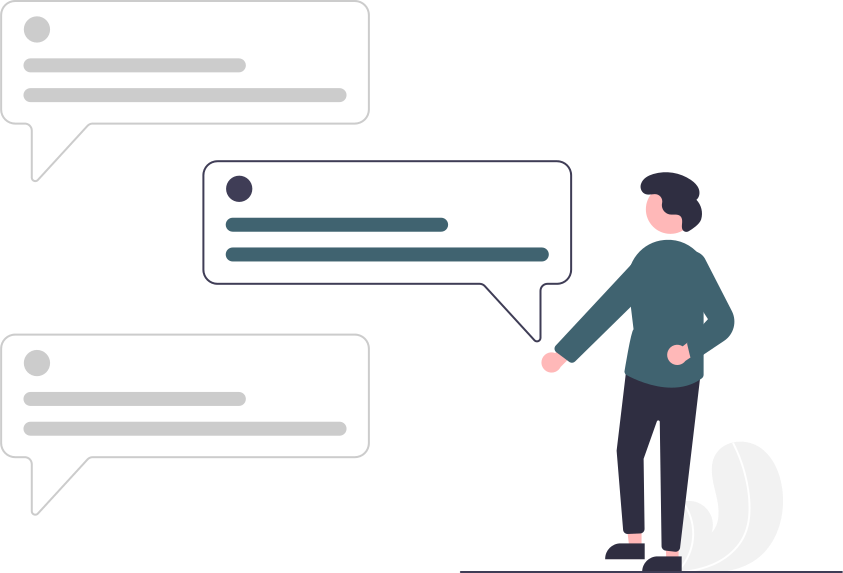

Oi, sou
Johnatan
Desenvolvo interfaces modernas e funcionais utilizando Angular e React, garantindo boa usabilidade e atenção aos detalhes do layout.
Construo APIs REST em .NET 8, integro bancos de dados e desenvolvo a conexão com agentes de IA para atender às regras de negócio.
Sou Desenvolvedor Web, formado em Análise e Desenvolvimento de Sistemas (ADS) e pós-graduado em Desenvolvimento Full-Stack. Ao longo da minha trajetória, entreguei desde soluções pontuais até plataformas de grande porte como sistemas de gestão de frotas e, mais recentemente, a criação e orquestração de agentes para uma plataforma interna de IA.
Minha principal especialidade é o Angular, tecnologia com a qual atuo há mais de 4 anos na construção e modernização de aplicações web, incluindo experiência prática com arquiteturas em Micro Frontends (MFE) e a garantia de estabilidade através de testes automatizados com Jest e Jasmine.
Hoje atuo como Full-Stack, combinando minha sólida bagagem front-end com .NET 8 (ASP.NET Core API) no back-end e React. Essa sinergia me permite transitar com autonomia do layout à arquitetura de APIs, construindo endpoints e integrando agentes de IA às regras de negócio da empresa.
Descomplica Faculdade Digital
fev de 2024 - 2025
Faculdade Alpha
fev de 2018 - jul de 2021
out de 2020
Exibir credencialout de 2022 – o momento · São Paulo, Remoto
Atuei inicialmente na aceleração do desenvolvimento de uma nova plataforma em Angular 12+ para substituir o sistema legado. Acompanhei a evolução do projeto de um monólito para uma arquitetura de Micro Frontends (MFE), sendo responsável pela entrega de diversas features do portal, ajustes em bibliotecas internas e no Design System da empresa, garantindo estabilidade com testes unitários em Jest e Jasmine.
Posteriormente, integrei no time de IA, expandindo a atuação para um perfil Full-Stack no desenvolvimento de uma plataforma interna de IA multi-agente. Além da reformulação do layout com React, passei a construir endpoints em .NET 8 (ASP.NET Core API) integrados ao ecossistema de dados e criação e integração de agentes de IA.
fev de 2021 – out de 2022 · 1 ano 9 meses · Recife, Híbrido
Atuei na sustentação de aplicações web direcionadas ao setor público de Pernambuco, utilizando arquitetura MVC com .NET Framework 4.5. Participei também do desenvolvimento de novos sistemas web (estadual e interno), com Angular, Sass, Bootstrap, JavaScript, TypeScript no front-end e ASP.NET Core API com SQL Server no back-end.
set de 2019 – fev de 2021 · 1 ano 6 meses · Remoto
Responsável pelo desenvolvimento e manutenção de conteúdos SCORM para uma plataforma de e-learning fundamentada em sistema web, utilizando HTML, CSS e JavaScript.
Unindo interfaces funcionais e intuitivas ao desenvolvimento de APIs e integração de dados no back-end.
Front-End é minha principal especialidade, com mais de 4 anos desenvolvendo aplicações de grande porte
Desenvolvo soluções back-end com .NET 8 (ASP.NET Core API) para criação de APIs RESTful, regras de negócio e integração com ecossistemas de IA
No dia a dia, prezo por um fluxo de desenvolvimento organizado através de Code Reviews, Clean Code e integração contínua. Utilizo ferramentas que garantem eficiência e padronização nas entregas do time.
Email: johnatan.carlos007@hotmail.com
